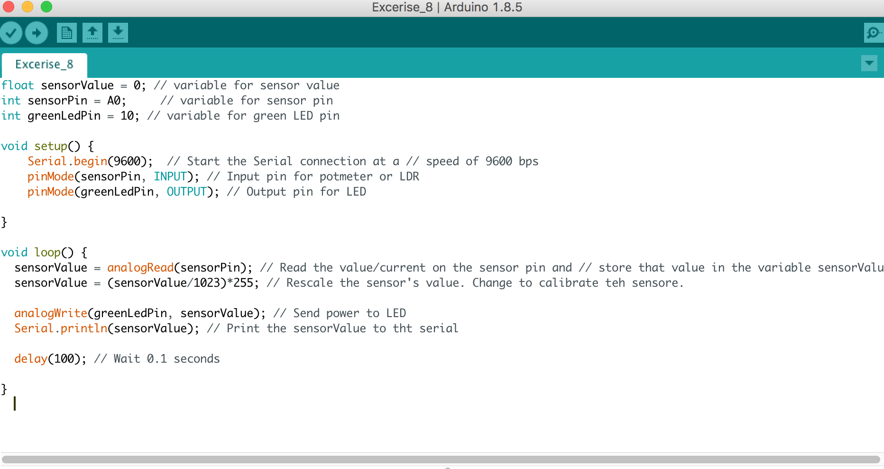
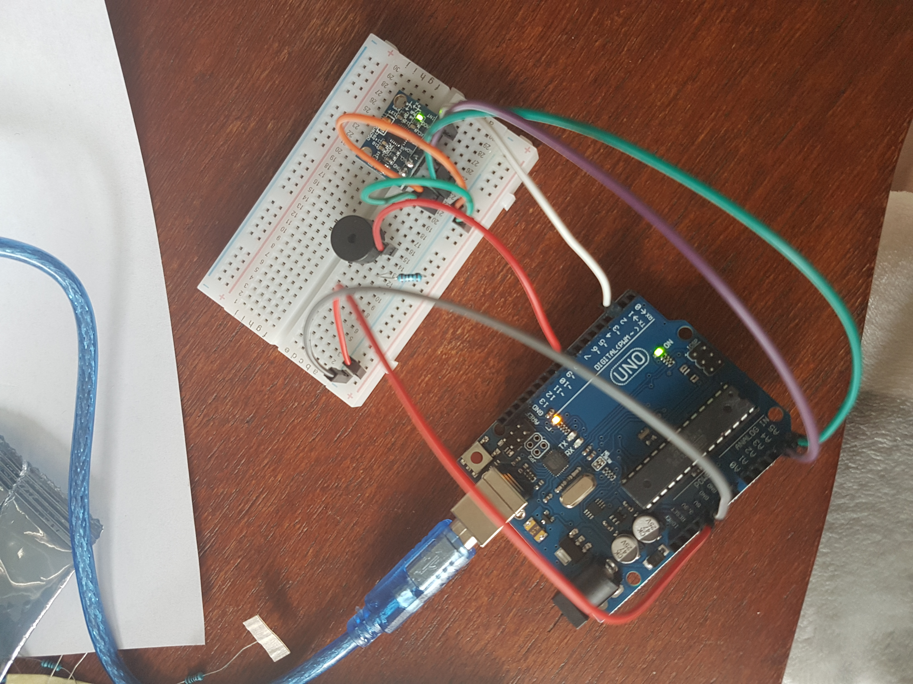

Arduino opdrachten
3c
Bij deze opdracht was het de bedoeling dat de ene LED sneller zou knipperen dan de andere. Hier had ik meteen al moeite mee aangezien ik alles leek te doen maar niks werkte. Toen bleek het dus dat ik de resistor verkeerd om had gedaan en toen werkte het wel!
4c
Bij deze opdracht moesten de LED's tegelijkertijd bewegen. De ene moest in faden en de andere juist outfaden. Ik kreeg het maar niet voor elkaar dat ze echt exact tegelijkertijd faden. De ene fade veel sneller in dan dat de andere outfade en dit heb ik ook niet kunnen oplossen.
6c
Bij deze opdracht was het de bedoeling om hetzelfde als bij opdracht 4c te bereiken alleen door middel van het draaien aan het potmeter. Dit vond ik ook best lastig aangezien het weer niet lukte om ze echt tegelijkertijd te laten faden. Wel beginnen ze op het zelfde moment alleen de een doet er langer over.
7
Bij deze opdracht wordt een sensor gebruikt. Het is de bedoeling dat de sensor reageert op licht/donker en hierdoor worden de lampjes juist helderder of juist niet. Deze code vond ik erg lastig en ik heb dan ook om hulp gevraagd. Uiteindelijk is het gelukt!
8b
In deze opdracht moesten Arduino en Processing samen gaan werken. Door middel van een verandering in de code heb ik de sensor kunnen laten reageren zodat de rechthoek bewoog zodra de waarden veranderden.
9f
Voor deze opdracht werd er met knoppen gewerkt. Het moest zo zijn dat de led het deed als er op een van de knoppen gedrukt werd, maar dat hij het niet deed als ze allebei werden ingedrukt. Ik heb hier wel even mee gestruggled. De code leek in eerste instantie te kloppen maar de kabels zaten vaak verkeerd of net niet op de juiste plek. Ik blijf dit een lastig iets vinden om goed te kunnen zien.
10b
Voor deze opdracht wordt gewerkt met een Servomotor. In het begin begreep ik niet zo goed hoe ik deze moest verbinden met het bord, ik dacht dat er pinnen ontbraken. De verdere aansluiting was vrij simpel al was ik het witte 'armpje' er in het begin op vergeten te doen. Ik heb wel wat hulp gekregen bij mijn code omdat ik er zelf niet helemaal uitkwam. Het is nu net alsof het een schildpad is die is omgevallen en niet meer kan opstaan.

11b
Voor deze opdracht werd de Servomotor gekoppeld aan twee knoppen. Op deze manier kan de motor bewogen worden door het klikken op een van de knoppen. Deze opstelling ging makkelijker omdat ik de opstelling van de knop al bij een vorige opdracht heb moeten doen. Wel vond ik de code lastig om uit te vogelen, gelukkig is dit met hulp wel alsnog gelukt.
12b
Voor deze opdracht werd er gebruik gemaakt van een speaker. Deze opdracht ging vergeleken bij de andere vrij gemakkelijk. De uitleg was hierbij dan ook simpel en duidelijk. Ook vond ik het erg grappig om te doen! Ik heb een melodie gemaakt die mij doet denken aan mijn favoriete Indie game : Undertale.
13e
Deze opdracht ging in combinatie emt de accelerometer en de speaker. Ik kreeg deze opdracht maar niet voor elkaar. De opbouw begreep ik prima, dit zat goed in elkaar. Alle lampjes branden zodat ik kon zien dat alles goed verbonden was. De code begreep ik echt totaal niet, zelfs met een code die het bij een klasgenoot wel deed, lukte het bij mij niet. Deze opdracht is mij dus helaas niet gelukt, ik kreeg het niet opgelost.
